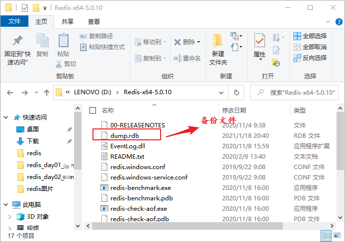

Redis数据备份和还原
Redis SAVE 命令用于创建当前数据库的备份文件，文件名默认为
下面使用
dump.rdb。备份数据库数据可以增强对数据的保护，提升数据的安全性。当数据不小心丢失或者被删除时，我们就可以通过相应的操作进行数据恢复。本节介绍 Redis 的数据备份和数据还原操作。备份数据
SAVE 命令基本语法如下：redis 127.0.0.1:6379> SAVE执行备份命令：
redis 127.0.0.1:6379> SAVE OK注意：命令执行后，将在 Redis 安装目录中自动创建
dump.rdb文件。如下图所示：

图1：Redis 备份文件 dump.rdb
图1：Redis 备份文件 dump.rdb
恢复数据
如果您想恢复数据，只需将备份文件 dump.rdb 移动到 Redis 安装目录下，然后重启 Redis 服务器，即可进行数据还原。下面使用
CONFIG命令获取 Redis 安装目录，如下所示：127.0.0.1:6379> CONFIG GET dir 1) "dir" 2) "D:\\Redis-x64-5.0.10"从上述命令可以得知 Redis 的安装目录为 D:\\Redis-x64-5.0.10。
后台备份数据
Redis 还提供了一个BGSAVE命令，同样也可以创建 Redis 备份文件，它与SAVE命令的不同之处在于，该命令在后台运行。示例演示：
127.0.0.1:6379> BGSAVE Background saving started
关注公众号「站长严长生」，在手机上阅读所有教程，随时随地都能学习。内含一款搜索神器，免费下载全网书籍和视频。

微信扫码关注公众号